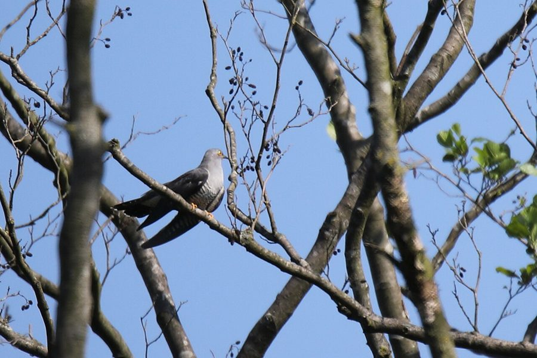

कुक्कूCommon Cuckoo
Cuculus canorus · Cuculidae · BRD-0242

- Scientific name वैज्ञानिक नाम
- Cuculus canorus Linnaeus, 1758
- Family कुल
- Cuculidae
- Hindi हिंदी
- कुक्कू
- Local names स्थानीय नाम
- kukku, kuckoo, common cuckoo, cuckoo
- Status here यहाँ की स्थिति
- native
- Movement आवागमन
- Summer visitor
- Known from कहाँ दर्ज
- Others have published records from the Basti–Ayodhya districts बस्ती–अयोध्या के ज़िलों से दूसरों के प्रकाशित अभिलेख
- IUCN IUCN
- LC
- Review समीक्षा
- audited and independently read
When to look कब देखें
Summer visitor ग्रीष्मकालीन प्रवासी. Expected mainly in March, April, May, June, July, August, September. मुख्यतः मार्च, अप्रैल, मई, जून, जुलाई, अगस्त, सितंबर में अपेक्षित।
Arrives in March–April from African wintering grounds; departs August–September. Breeds throughout its range in eastern UP. All migrants and visitors →
Uses and possibilities उपयोग और संभावनाएँ
Drawn from the documented uses in the profile below, where each is labelled traditional, current or a research lead. All uses →
Tell it apart from इनसे अलग पहचानें
कुक्कू / Common Cuckoo
Cuculus canorus Linnaeus, 1758 — Cuculidae
कुक्कू — यह प्रसिद्ध गायक चिड़िया अफ्रीका से गर्मियों में भारत आती है। इसकी सबसे खास बात यह है कि यह अपने अंडे दूसरी चिड़ियों के घोंसलों में रखती है। इसकी कूकना "कु-कु-कु" बहुत प्रसिद्ध है जिससे इसका नाम पड़ा। यह भूरे या गहरे रंग की होती है, शरीर पतला और छोटा। वसंत में जब यह आती है तो इसकी आवाज़ हर ओर सुनाई देती है। इसके लिए नर गायन से ज़्यादा सक्रिय होते हैं।
Quick Identification त्वरित पहचान
| Feature | Description |
|---|---|
| Size | Medium, pigeon-like; 32–34 cm long; 40–43 g |
| Plumage | Grey above; white underparts with barring; sexually dimorphic |
| Male plumage | Slate-grey head, back, and wings; white underparts with dark barring on flanks |
| Female plumage | More rufous-brown; may show buff tones on head |
| Bill | Slightly curved, yellow-green with dark tip |
| Tail | Long, grey with white spots on feathers |
| Eyes | Yellow or golden |
| Behaviour | Sings from exposed perches; relatively skulking; often heard before seen |
| Call | Famous loud cuc-koo or ku-koo, 2–3 times, repeated |
Field tip: A medium-sized, slate-grey (male) or browner (female) bird often heard calling from the top of a tree but harder to see due to its preference for remaining in foliage and tall trees. The loud, distinctive cuc-koo call is unmistakable and famous. Males are more vocal in spring. The bird is a brood parasite and does not build its own nest.
हिंदी — कैसे पहचानें:
मध्यम आकार की चिड़िया।
नर धूसर, मादा भूरी।
पीली आँखें।
"कु-कु-कु" आवाज़।
पेड़ों की ऊँचाई पर दिखता है।
दूसरी चिड़ियों के घोंसलों में अंडे देता है।
Morphology आकारिकी
Biometrics:
| Measurement | Range |
|---|---|
| Total length | 320–340 mm |
| Wing (flattened chord) | 205–230 mm |
| Tail | 130–150 mm |
| Bill | 18–21 mm |
| Tarsus | 18–22 mm |
| Weight | 40–43 g |
Size: 32–34 cm long; wingspan 55–65 cm. Similar in size to a pigeon but more slender.
Plumage (male): Slate-grey on crown, nape, back, and wings. Face and ear-coverts grey. Throat and upper breast white. Lower underparts white with fine dark barring on flanks and undertail-coverts. Tail grey with white spots near tips.
Plumage (female): More variable. Many females rufous-brown on crown and upperparts. Buff or cream wash on underparts. Similar barring pattern to males. Some females darker, more grey like males.
Bill: Slightly curved, yellow-green base with dark tip. Relatively fine.
Tail: Long, grey, with white spots visible on feathers. Graduated tail.
Eyes: Yellow or golden-yellow.
Legs: Short, yellow or greenish-yellow.
Sexes: Highly dimorphic. Males slate-grey; females more rufous-brown (though some overlap).
Vocalisations. Highly vocal, especially males in spring:
- Primary call: Famous loud, clear cuc-koo or cu-koo, 2–3 notes, repeated at intervals. Males call more; females rarely.
- Alarm: Harsh, grating sounds when disturbed.
- Contact: Softer calls between individuals.
हिंदी: "कु-कु-कु" या "कुक्कू" आवाज़। नर ज़्यादा गाता है।
Behaviour & Ecology व्यवहार और पारिस्थितिकी
Obligate brood parasite: Lays eggs in nests of other bird species (host species). Does not build its own nest or raise its own young. Host species include:
- Indian Robin
- Ashy Prinia
- Baya Weaver
- Other small passerines
Egg parasitism: Female searches for host nests, watches for the right moment, and lays her egg in the nest, often removing a host egg. Cuckoo chick is larger and outcompetes host chicks.
Feeding: Feeds on insects, particularly caterpillars and hairy lepidopteran larvae.
Perching behaviour: Often perches in exposed locations to call, but also remains in dense foliage when not calling.
Flight: Swift, direct flight; agile.
Territoriality: Males are highly territorial during breeding season and defend calling territories.
हिंदी: दूसरी चिड़ियों के घोंसलों में अंडे देता है। कीड़े खाता है, विशेषकर कैटरपिलर।
Life Cycle / Phenology जीवन चक्र
Summer visitor: Absent during non-breeding season (October–February); returns to eastern UP from March–April and remains through August–September.
Arrival and departure: First birds arrive in March; peak calling April–June; departure begins August, most gone by September.
Breeding range: Europe, Asia, and North Africa. Eastern populations breed in temperate and subtropical regions including northern India.
Breeding: March to August; peak May–June. Lays eggs in host nests. Typically one egg per host nest.
Incubation: Approximately 11–13 days by host parents.
Nestling period: Cuckoo chick fledges at 17–21 days; larger than host chicks, often outcompetes them.
Post-fledging: Young cuckoo is fed by host parents for several weeks after leaving nest.
Wintering: Winters in Africa; specific wintering grounds of Indian breeders not fully known.
हिंदी: मार्च में आता है, सितंबर तक चला जाता है। गर्मी में प्रजनन।
Host Plants or Prey आहार
| Food Type | Examples | Feeding Behaviour |
|---|---|---|
| Insects | Caterpillars, beetles, flies | Gleaning from foliage |
| Hairy larvae | Lepidopteran caterpillars | Picking from plants |
| Small insects | Various | Opportunistic gleaning |
हिंदी: कीड़े खाता है, खासकर रेशेदार कैटरपिलर। पत्तियों से चुनता है।
Predators / Natural Enemies शत्रु
- Raptors: Small eagles, falcons
- Corvids: Crows may mob cuckoos in response to parasitism
हिंदी: बाज़ और अन्य शिकारी चिड़ियाँ। कौवे इसको मार-भगाते हैं।
Agricultural / Human Relevance कृषि प्रासंगिकता
Pest control: Feeds on caterpillars including agricultural pests. Hairy lepidopteran caterpillars, which many birds avoid, are eaten by cuckoos.
Cultural significance: Highly culturally significant in India. Featured extensively in classical Sanskrit poetry and literature as a symbol of spring and love. The Kakapo (cuckoo) is celebrated in Indian classical arts.
Protected status: All wild birds protected under the Wildlife (Protection) Act 1972, Schedule IV. Hunting is illegal.
Ecological role: As a brood parasite, cuckoos impact host species populations and may cause ecological effects on host breeding success.
हिंदी: यह विधि अधिनियम 1972 के अंतर्गत संरक्षित है। वसंत का प्रतीक माना जाता है।
Expected Locally स्थानीय रूप से अपेक्षित
Not a field record. Written from published accounts for eastern Uttar Pradesh. No confirmed local sighting yet — if you have seen it, that is what the atlas needs.
अभी तक स्थानीय पुष्टि नहीं। यह विवरण प्रकाशित स्रोतों से है, किसी अवलोकन से नहीं।
The Common Cuckoo is expected as a summer visitor to eastern Uttar Pradesh from March to September. Listen for the distinctive cuc-koo or cu-koo call from the tops of trees in open woodlands, cultivated areas, and gardens. Males are most vocal from April to June during breeding season. The bird is most easily detected by its call rather than visual observation. A first record would require a clear photograph showing the grey (male) or rufous (female) plumage, yellow eye, and medium size, or an audio recording of the distinctive call with place and date, submitted through the About page.
Distribution वितरण
Global range: Eurasia and North Africa. Breeds across temperate and subtropical zones. Winters in Africa and southern Asia.
In India: Wide-ranging summer visitor across the subcontinent; particularly common in northern regions.
In Uttar Pradesh: Widespread summer visitor throughout the state; particularly abundant in northern areas.
In Basti district / eastern UP: Summer visitor from March to September. Breeds throughout suitable habitat.
Research Questions शोध प्रश्न
- What is the current population of Common Cuckoos in eastern UP, and what are the trends over time?
- कुक्कू किन चिड़ियों के घोंसलों में अंडे देते हैं — क्या सभी में या कुछ खास प्रजातियों में?
- How does host selection vary by geographic location within the region?
- What is the success rate of cuckoo egg parasitism for different host species in eastern UP?
- How are host species affected by cuckoo parasitism, and what are the ecological consequences?
- क्या कुक्कू की आबादी में मौसमी भिन्नता है? (A child can record calling locations during spring and count daily.)
Similar Species मिलती-जुलती प्रजातियाँ
| Species | Key Difference | Hindi | Field Rule | |
|---|---|---|---|---|
| [[shikra\ | Shikra]] (Accipiter badius) | Smaller accipiter; yellow legs; different habitat (birds); yellow eye-ring | शिकरा | Shikra is a raptor with yellow legs and hunts small birds. Common Cuckoo has greenish legs and different body shape. |
| Indian Koel (Eudynamys scolopaceus) — different genus, also parasite | Larger; glossy black male; red eye; different call | कोयल | Indian Koel is larger with a distinctive loud call. Common Cuckoo has the famous cuc-koo call. |
Field rule: A medium-sized slate-grey (male) or rufous-brown (female) bird calling from exposed tree-tops with the famous loud cuc-koo call is a Common Cuckoo. The distinctive call is diagnostic.
Taxonomy & Classification वर्गीकरण
Original description. Described by Carl Linnaeus in 1758 in Systema Naturae (10th edition), page 110, as Cuculus canorus. Type locality: Europe.
Subspecies. Multiple subspecies across Eurasian range; C. c. canorus breeds in northern Europe and western Asia; C. c. canorus also occurring in India.
Family and order placement. Order Cuculiformes; family Cuculidae (cuckoos and coucals). The genus Cuculus contains the "true" or parasitic cuckoos.
Phylogenetic notes. Common Cuckoo is the most widespread brood parasite in the Old World. Its evolution of parasitism is an example of coevolution between parasite and hosts.
IUCN status rationale. Assessed as Least Concern (LC). The global population is large and stable. The species has successfully adapted to human-modified landscapes and various host species.
हिंदी: यूरोप और एशिया में बहुत सामान्य है। अफ्रीका में सर्दी बिताता है।
Photo Gallery फोटो गैलरी
No photos yet — add field photos to media/species/common_cuckoo/ and run node scripts/sync_photos.js.
Wanted photos:
- Male in slate-grey plumage
- Female showing rufous-brown tones
- Perched calling from tree-top
- In flight showing long tail
- Close-up showing yellow eye
- Audio recording of cuc-koo call
References संदर्भ
- Linnaeus, C. (1758). Systema Naturae per Regna Tria Naturae. 10th ed. Laurentii Salvii, Holmiae. Page 110.
- Ali, S. & Ripley, S.D. (1987). Handbook of the Birds of India and Pakistan. Vol. 4. Oxford University Press, New Delhi. Pp. 369–372.
- Grimmett, R., Inskipp, C. & Inskipp, T. (2011). Birds of the Indian Subcontinent. 2nd ed. Christopher Helm, London. Pp. 218–220.
- Payne, R.B. (2005). The Cuckoos. Oxford University Press, Oxford.
- BirdLife International (2023). Cuculus canorus. IUCN Red List of Threatened Species. IUCN, Cambridge.
- GBIF Occurrence Data — Cuculus canorus, India.
Source file: species/fauna/birds/common_cuckoo.md